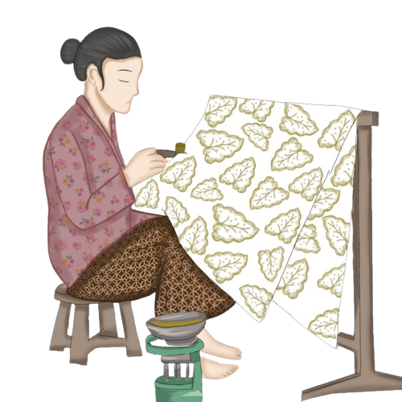

Mengenal Batik Indonesia
Ragam corak dan warna batik dipengaruhi oleh berbagai pengaruh budaya lokal dan asing. Awalnya, batik memiliki ragam corak dan warna yang terbatas, dan beberapa corak hanya boleh dipakai oleh kalangan tertentu, misalnya kalangan keraton.

Jenis - Jenis Batik
Batik dapat dibedakan menjadi beberapa jenis, sebagai berikut:
- Batik Tulis
- Batik Cap
- Batik Lukis
- Batik Pecinaan
- Batik Belanda
- Batik Jawa Hokokai
- Batik Rifa'iyah
Tradisi membatik pada mulanya merupakan tradisi yang turun-temurun sehingga kadang kala suatu motif dapat dikenali berasal dari batik keluarga tertentu. Beberapa motif batik dapat menunjukkan status seseorang. Bahkan, sampai saat ini beberapa motif batik tadisional hanya dipakai oleh keluarga keraton Yogyakarta dan Surakarta.
Filosofi
Motif Batik